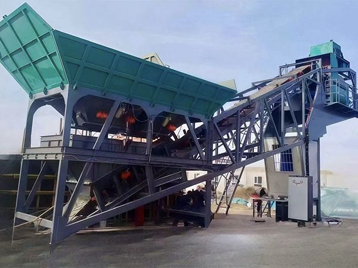

Plantas de Hormigón YUDA HUALONG
ZHENGZHOU YUDA HUALONG Heavy Industry, establecida en Zhengzhou, Henan. Especializada en diseño y fabricación de plantas de hormigón fijas y móviles con capacidad de 25-480 m³/h. Certificada ISO9001 y CE, con más de 25 años de experiencia.


Plantas Móviles
Fáciles de transportar e instalar. Perfectas para proyectos que requieren movilidad.
Ver Modelos